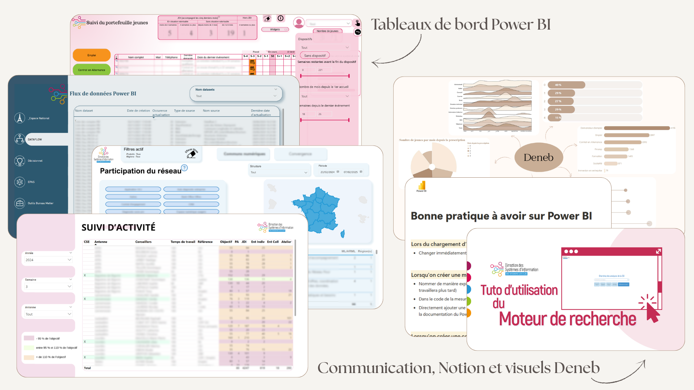

Je donne vie aux données à travers des tableaux de bord intuitifs et des analyses qui font sens.
Data • Visualisation • BI
Étudiante en première année de cycle ingénieur en informatique à CY Tech, diplômée d’un BUT en Sciences des Données. Je me spécialise en datavisualisation et outils décisionnels.

À propos
Étudiante en première année de cycle ingénieur en informatique à CY Tech et diplômée d’un BUT en Sciences des Données, je poursuis une spécialisation en datavisualisation et outils décisionnels. J’ai effectué un stage en tant que Data Analyst à la Direction des Systèmes d’Information des Missions Locales (Tarbes) et j’ai ensuite poursuivi en alternance en tant qu’Experte Décisionnelle.
Compétences
Langages
- Python • SQL • VBA • R • Shell
- HTML • CSS • JavaScript • PHP • C
Outils & BI
- Power BI • Qlik • Tableau
- Talend • Access • Excel • Notion
Soft Skills & Langues
- Travail d’équipe • Rigueur • Curiosité • Organisation
- Français (courant) • Arabe (courant) • Anglais (A2–B1)
Projets
Cliquez sur une carte pour voir les détails.
Challenge Dataviz — SNCF
Consommation énergétique
Classification automatique
SAE Reporting
Projet Enquête
Contact
Je reste à votre disposition pour tout échange ou opportunité professionnelle.